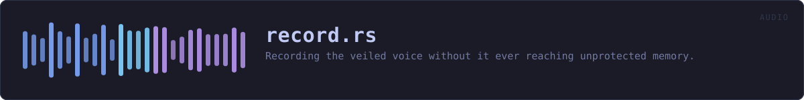

crates/veilvoice-audio/src/record.rs
veilvoice-audio · 534 lines · read the source here · or on GitHub
Recording the veiled voice without it ever reaching unprotected memory.
What this is for
live(crate::live) sends the veiled voice to a device and keeps nothing. This keeps it, and the whole difficulty is where. A recording that is accumulated in a Vec, encoded with a library that returns a Vec, and then sealed, has existed in unlocked, unzeroized memory three times over by the time it is encrypted, and the operating system may have written any of those copies to the page file. Sealing it afterwards does not take that back.
So the recording lives in a Tape from the first sample to the last, the WAV is assembled inside a Secret, and the only thing that leaves this module is that sealed-ready Secret. There is no route here that produces a plain Vec of the audio, because a route that existed would eventually be taken.
Never a plaintext file, either
Nothing here writes to disk at all. The caller seals the Secret and writes the result. A recorder that wrote a WAV and encrypted it afterwards would leave a plaintext file that veilvoice_crypto::shred(../veilvoice-crypto.html) explains cannot be reliably taken back on flash storage, which is the whole reason at-rest encryption is the default rather than an option.
The two halves, and why they are split
Sink is handed to the audio callback and Recorder is kept by the caller. They are joined by a lock-free ring buffer, for the reason the live(crate::live) module documentation gives: a callback that allocates or waits produces a dropout, and locking a page or growing a tape does both. So the callback only ever pushes into a buffer that is already allocated, and the slow, careful work of moving those samples into locked memory happens on the caller's thread in Recorder::drain.
A caller that stops draining does not stall the audio. The ring fills, and samples are counted as dropped rather than waited for, because a glitch in a recording is better than a glitch in the live output somebody is speaking into. Recorder::dropped reports it rather than letting the recording be quietly short.
In plain words
Keeps the veiled voice as it is produced, in memory the operating system has been asked not to write to disk, and hands it over ready to be encrypted.
It never writes an unencrypted recording anywhere, not even briefly, because a file that is written and deleted can still be recovered from the disk afterwards.
WHAT THIS FILE CONTAINS
534 lines defining 13 functions (10 public), 2 types and 3 constants. Everything below is read out of the source, so it cannot disagree with the code.
The types it owns.
struct Sinkline 91 · The writing half, handed to the audio callback.struct Recorderline 113 · The reading half: moves samples out of the ring and into locked memory.
What happens when it runs. These are the ways in: public, and nothing else in this file calls them, so they are what an outside caller reaches first.
Sink::writeline 103 · Take a block of veiled samples.startline 133 · Start a recorder and the sink that feeds it.Recorder::samplesline 183 · Samples recorded so far, as of the last Recorder::drain.Recorder::secondsline 188 · Length so far in seconds, as of the last Recorder::drain.Recorder::droppedline 200 · Samples lost because the caller did not drain in time.Recorder::fully_lockedline 210 · Whether every page holding the recording is locked out of swap.Recorder::sample_rateline 215 · The sample rate written into the WAV header.Recorder::wavline 230 · Drain what is left and hand over the recording as a WAV, in a Secret, ready to be sealed.
reachesdrain,wipe_scratch,write_headerRecorder::discardline 251 · Wipe the recording held so far and start again from nothing.
reacheswipe_scratch
WHAT CALLS WHAT
The functions this file defines, and the calls between them. An edge means the callee's name appears, called, inside the caller's body. This is a syntactic reading, not a type-resolved one.
The same graph as Mermaid source
%%{init: {"theme":"base","themeVariables":{"background":"#1a1b26","primaryColor":"#1f2335","primaryTextColor":"#c0caf5","primaryBorderColor":"#7aa2f7","secondaryColor":"#16161e","tertiaryColor":"#16161e","lineColor":"#737aa2","textColor":"#c0caf5","mainBkg":"#1f2335","nodeBorder":"#7aa2f7","clusterBkg":"#16161e","clusterBorder":"#2f3549","fontFamily":"ui-monospace, SFMono-Regular, Consolas, monospace","fontSize":"14px"}}}%%
flowchart TD
n_write(["Sink::write<br/>line 103"])
n_start(["start<br/>line 133"])
n_drain["Recorder::drain<br/>line 160"]
n_samples(["Recorder::samples<br/>line 183"])
n_seconds(["Recorder::seconds<br/>line 188"])
n_dropped(["Recorder::dropped<br/>line 200"])
n_fully_locked(["Recorder::fully_locked<br/>line 210"])
n_sample_rate(["Recorder::sample_rate<br/>line 215"])
n_wav(["Recorder::wav<br/>line 230"])
n_discard(["Recorder::discard<br/>line 251"])
n_wipe_scratch["Recorder::wipe_scratch<br/>line 263"]
n_drop["Recorder::drop<br/>line 287"]
n_write_header["write_header<br/>line 296"]
n_discard --> n_wipe_scratch
n_drop --> n_wipe_scratch
n_wav --> n_drain
n_wav --> n_wipe_scratch
n_wav --> n_write_header
click n_write href "https://github.com/tilas01/veilvoice/blob/main/crates/veilvoice-audio/src/record.rs#L103" "open the source"
click n_start href "https://github.com/tilas01/veilvoice/blob/main/crates/veilvoice-audio/src/record.rs#L133" "open the source"
click n_drain href "https://github.com/tilas01/veilvoice/blob/main/crates/veilvoice-audio/src/record.rs#L160" "open the source"
click n_samples href "https://github.com/tilas01/veilvoice/blob/main/crates/veilvoice-audio/src/record.rs#L183" "open the source"
click n_seconds href "https://github.com/tilas01/veilvoice/blob/main/crates/veilvoice-audio/src/record.rs#L188" "open the source"
click n_dropped href "https://github.com/tilas01/veilvoice/blob/main/crates/veilvoice-audio/src/record.rs#L200" "open the source"
click n_fully_locked href "https://github.com/tilas01/veilvoice/blob/main/crates/veilvoice-audio/src/record.rs#L210" "open the source"
click n_sample_rate href "https://github.com/tilas01/veilvoice/blob/main/crates/veilvoice-audio/src/record.rs#L215" "open the source"
click n_wav href "https://github.com/tilas01/veilvoice/blob/main/crates/veilvoice-audio/src/record.rs#L230" "open the source"
click n_discard href "https://github.com/tilas01/veilvoice/blob/main/crates/veilvoice-audio/src/record.rs#L251" "open the source"
click n_wipe_scratch href "https://github.com/tilas01/veilvoice/blob/main/crates/veilvoice-audio/src/record.rs#L263" "open the source"
click n_drop href "https://github.com/tilas01/veilvoice/blob/main/crates/veilvoice-audio/src/record.rs#L287" "open the source"
click n_write_header href "https://github.com/tilas01/veilvoice/blob/main/crates/veilvoice-audio/src/record.rs#L296" "open the source"
classDef entry fill:#1f2335,stroke:#7aa2f7,color:#c0caf5
class n_write,n_start,n_samples,n_seconds,n_dropped,n_fully_locked,n_sample_rate,n_wav,n_discard entry
classDef api fill:#1f2335,stroke:#7dcfff,color:#c0caf5
class n_drain api
classDef helper fill:#1f2335,stroke:#bb9af7,color:#c0caf5
class n_wipe_scratch,n_drop,n_write_header helperThis site loads no third-party script, so it cannot run Mermaid; the diagram above is the same nodes and edges drawn by the generator instead. GitHub renders the source below directly.
ITEMS
| Item | Line | Documentation |
|---|---|---|
HEADER const | 63 | Bytes in a canonical 16-bit PCM WAV header. |
WAV_MAX_DATA const | 76 | The most PCM data a RIFF/WAVE file can describe, in bytes. |
SLACK_SECONDS pub const | 85 | How much audio the ring holds before samples are dropped, in seconds. |
Sink pub struct | 91 | The writing half, handed to the audio callback. |
Sink::write pub fn | 103 | Take a block of veiled samples. |
Recorder pub struct | 113 | The reading half: moves samples out of the ring and into locked memory. |
start pub fn | 133 | Start a recorder and the sink that feeds it. |
Recorder::drain pub fn | 160 | Move everything waiting in the ring into the tape. |
Recorder::samples pub fn | 183 | Samples recorded so far, as of the last Recorder::drain. |
Recorder::seconds pub fn | 188 | Length so far in seconds, as of the last Recorder::drain. |
Recorder::dropped pub fn | 200 | Samples lost because the caller did not drain in time. |
Recorder::fully_locked pub fn | 210 | Whether every page holding the recording is locked out of swap. |
Recorder::sample_rate pub fn | 215 | The sample rate written into the WAV header. |
Recorder::wav pub fn | 230 | Drain what is left and hand over the recording as a WAV, in a Secret, ready to be sealed. |
Recorder::discard pub fn | 251 | Wipe the recording held so far and start again from nothing. |
Recorder::wipe_scratch fn | 263 | Clear the drain scratch. |
Recorder::drop fn | 287 | Wipe the drain scratch. |
write_header fn | 296 | Write a canonical 44-byte mono 16-bit PCM WAV header into out. |